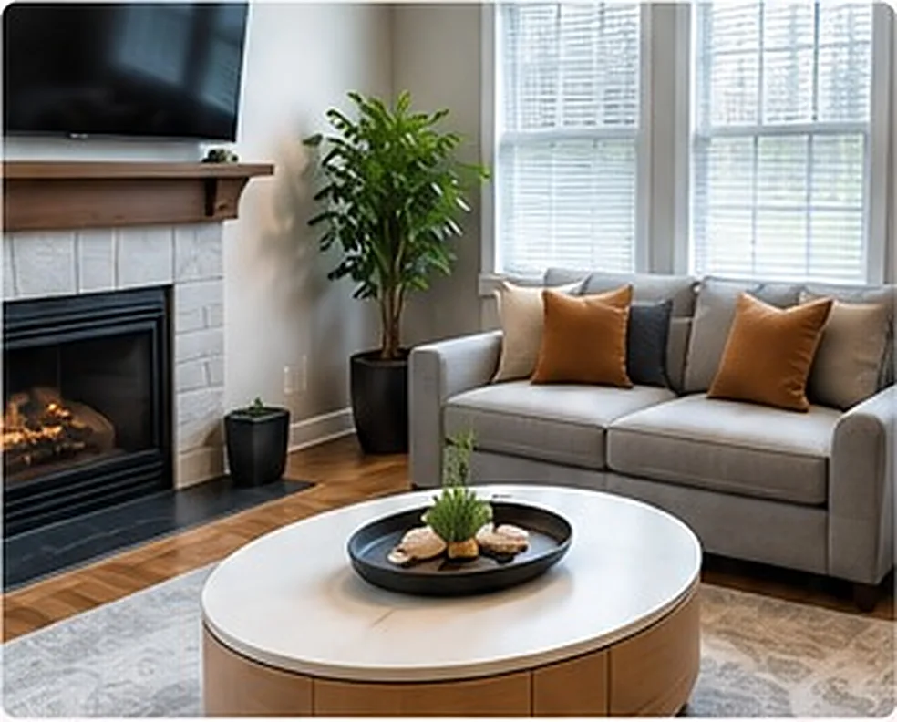
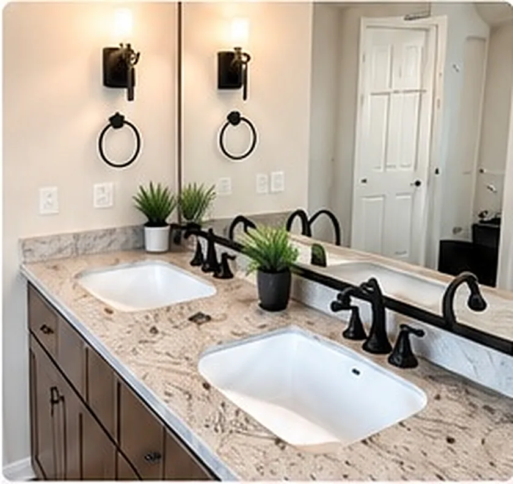
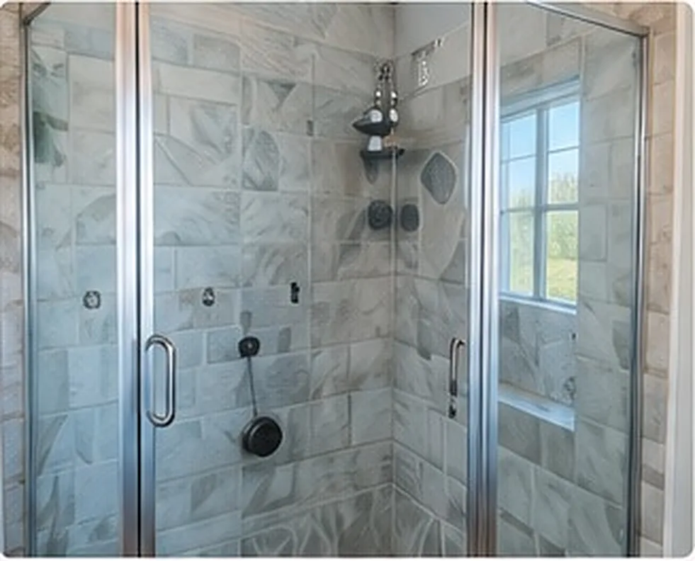
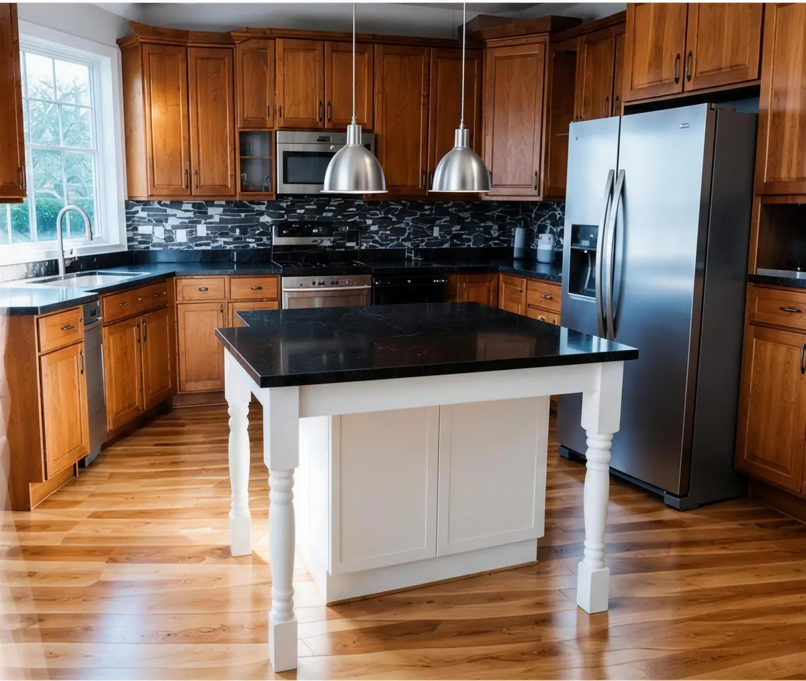

JCT Cleaning Services, house and apartment cleaning in Kennewick, Pasco and Richland, WA
Services
Cleaning for homes, rentals and offices across the Tri-Cities
-
01
House cleaning
Weekly, every other week, monthly or one time. Houses, condos and apartments in Kennewick, Pasco, Richland and West Richland.
-
02
Deep cleaning
Extra time on kitchens, bathrooms and the spots that get touched all day. Ask for the inside of the oven, light fixtures, sink drains, dishwasher filters and windows.
-
03
Move-in and move-out
Get your deposit back, or walk into a home that is already clean. Cabinets, appliances, floors and baseboards before the keys change hands.
-
04
Apartment turnovers
Property managers call JCT to clean units between residents, so each apartment is ready for the next move-in on schedule.
-
05
Commercial and office
Offices, workplaces and small businesses. Early-morning slots start at 6 AM, so the work is done before your team shows up.
Our work
Real rooms we've cleaned




About JCT
A local crew that cleans the parts other people skip
JCT Cleaning Services is a Tri-Cities company cleaning homes, apartments and offices in Kennewick, Pasco, Richland and West Richland. Clients ask for Josefa by name. One of them put it this way: she cleans inside the oven when it needs it, plus the light fixtures, sink drains, dishwasher filters and windows, along with the regular clean.
Local property managers trust JCT with apartment turnovers, and homeowners keep them on a schedule. Every one of JCT's Google reviews is five stars.
- Google rating
- 5.0 (7 reviews)
- Open
- 7 days 6 AM to 6 PM
- Quotes
- Free call, text or form
Reviews
What Tri-Cities clients say
"Josefa is one of the best house keepers I have ever used. She leaves the apartment looking good as new. She cleans inside the oven when it needs it, light fixtures, sink drains, dishwasher filters, and even windows along with her regular clean."
"They clean our apartments between residents, and they always do such a great job. They're dependable, professional, and really take their time to make sure everything looks clean and ready for the next resident."
"Excellent detailed work, everything was spotless. They did such an impeccable job."
"Josefa is the best! She's kind, trustworthy, and does a fabulous job with everything she does!"
"Such a fantastic team! They always do a great job! I would recommend for anyone looking for cleaning services!"
"Excellent company with friendly and dependable customer service! Stand up company with standup people!"
"Great professional friendly cleaning! Will recommend to anyone."
Service area
Cleaning in Kennewick, Pasco, Richland and West Richland
- Kennewick
- Pasco
- Richland
- West Richland
Hours
Monday to Sunday, 6 AM to 6 PM
Common questions
What areas does JCT Cleaning Services cover?
Homes, apartments and offices in Kennewick, Pasco, Richland and West Richland. If you are just outside the Tri-Cities, call (509) 987-3053 and ask.
What are your hours?
Every day of the week, Monday through Sunday, from 6 AM to 6 PM.
How much does a house cleaning cost?
It depends on the size of the home, how often you want it cleaned and whether it needs a deep clean first. Quotes are free. Call or text (509) 987-3053, or use the form below.
Do you clean apartments between tenants?
Yes. Tri-Cities property managers use JCT to turn units over between residents so each apartment is ready for the next move-in.
What does a deep clean include?
Kitchens, bathrooms and high-touch areas get extra time. On request JCT also does the inside of the oven, light fixtures, sink drains, dishwasher filters and windows.
Do you do commercial cleaning?
Yes. JCT cleans offices, workplaces and small businesses too, starting as early as 6 AM.
Free quote
Tell us about your space
Send the form and JCT will get back to you with a price. If you'd rather talk, call or text.
(509) 987-3053 JctCleaning@outlook.comOpen 7 days, 6 AM to 6 PM